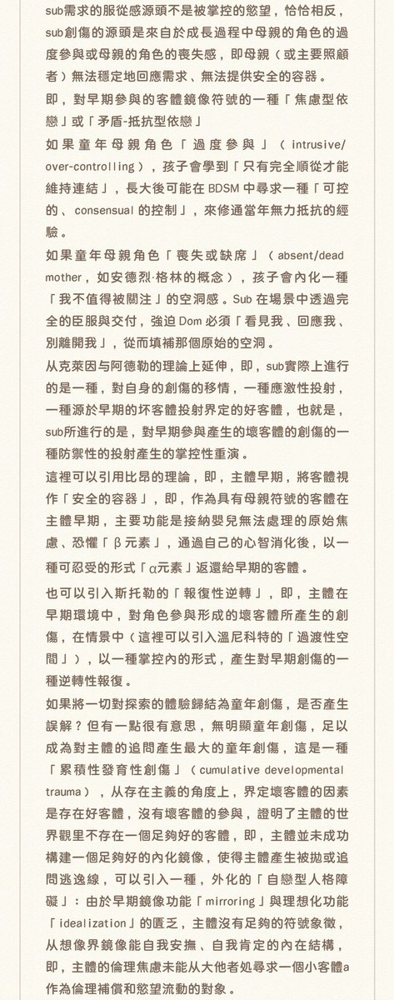
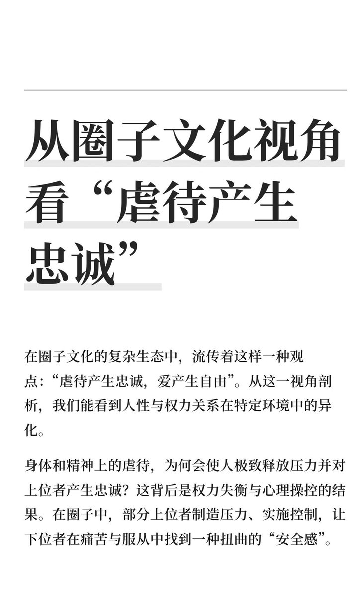
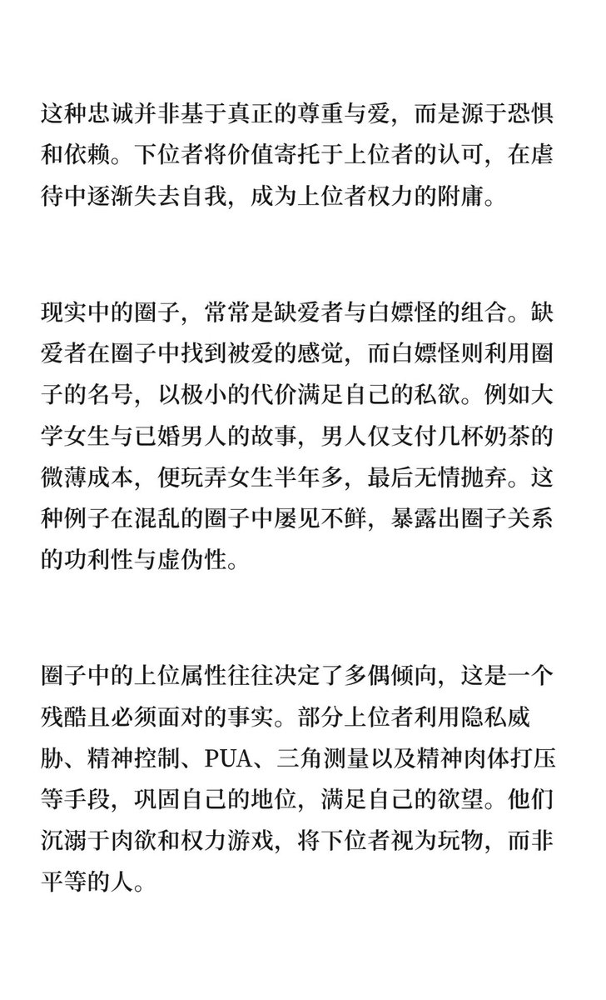
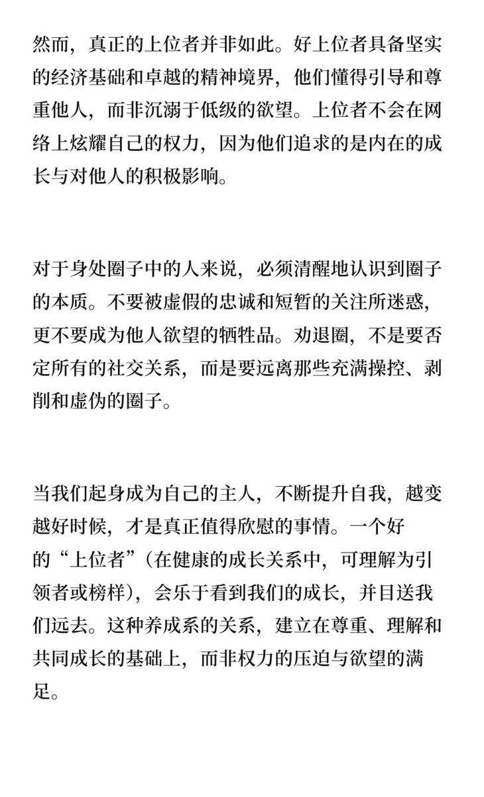
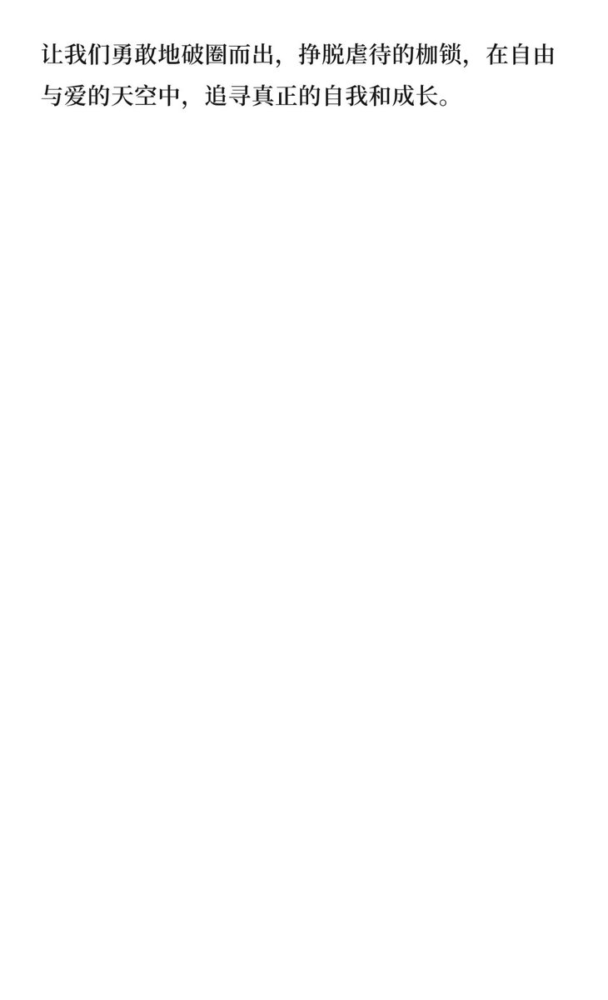

時璃風医詩🌈🏳️🌈
@hagishigure
@xcc112233 这是一个占位符。





白先生
@xcc112233
从圈子文化视角看“虐待产生忠诚”
圈子文化中，虐待与忠诚实为权力操控与心理依赖的产物，下位者在痛苦中寻求扭曲的安全感。
缺爱者与白嫖怪利用关系满足私欲，上位者通过控制巩固地位。真正的上位者应具备尊重与成长，而非权力压迫。破圈追求自由与自我成长。 https://t.co/kCrYxlc6U6